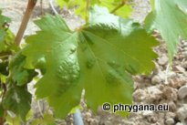

")
| PHRYGANA | Fauna | Flora | Galles | liste des espèces |
contact -
info - commentaires phrygana1 (at) gmail.com |
| Particularités crétoises | nouveautés | Mines | ressources naturelles |
| les Galles de Crète |
| Les Galles |
| Les Galles peuvent être définies comme « des ensembles de cellules ou de tissus végétaux présentant un développement modifié spécifique de l’influence d’un organisme parasite ou symbiotique » (Dauphin, 1997). |
| Plus simplement, une Galle est le résultat d’une association entre 2 organismes, le premier (le cécidogène) provoquant la modification locale d’un organe du second (le végétal-hôte). La masse cellulaire modifiée constitue un abri dans lequel le gallicole poursuit une partie de son développement. Les associations sont le plus souvent bénéfiques pour l’agent cécidogène. |
| La fréquence des Galles par type d'organes des végétaux peut se quantifier comme suit: les feuilles 65%, les tiges 20%, les bourgeons 10% et l'ensemble des fleurs, fruits et racines 5%. |
| L'ensembles des organismes cécidogènes se répartit entre les Insectes 74%, les Acariens 15%, les Champignons 14%, les Bactéries 1%, les Plantes 0,5% et les Nématodes 0,5%. |
| ERIOPHYIDAE cécidogènes | ||||
| Les Eriophyidae sont de minuscules Acariens (0,1 - 0,3 mm), munis de deux paires seulement de pattes locomotrices. Ils ont un corps vermiforme et sont aveugles. De très nombreuses espèces sont gallicoles ou cécidogènes. Les galles causées par les Eriophyidae varient de l'erineum à la véritable cécidie. La galle est induite par réaction à l'injection de salive au moment de la prise de nourriture. | ||||
| La dispersion des Eriophidae est assurée en grande partie par le vent. | ||||
|  | ||||
| Colomerus vitis | ||||
| APHIDIDAE cécidogènes | ||||
| Les Aphididae cécidogènes ou gallicoles provoquent par leurs piqûres une cécidie | ||||
|
|
||||
| Aploneura lentisci | ||||
| 10 juillet 2013 |
| © paul fontaine -- © Phrygana.eu 2007 -- 2013 |